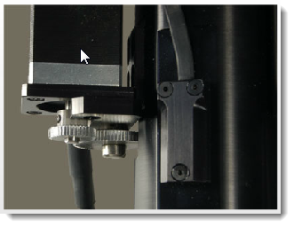
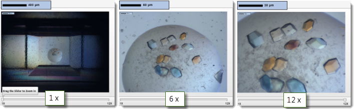
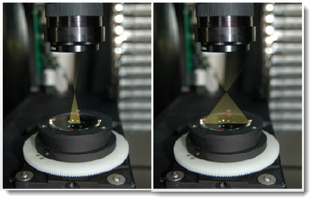

Visible Light Imaging¶
All ROCK IMAGER models feature a visible light camera that is used to take brightfield images of crystallization plates. The type of camera and capabilities offered depend on the ROCK IMAGER model you have. The advanced model includes continuous 12x motorized zoom option with a 5 megapixel, 2/3” color Charge-Coupled Device (CCD) camera capable of capturing high-quality images at up to 25 frames per second. The basic Single Light Path (SLP) model uses a single optical pathway that can be used for both visible and UV imaging and includes a monochrome (black and white) camera capable of capturing high-quality images at up to 15 frames per second with fixed or compound zoom objectives.
Camera and optics settings can be manipulated through the Plate Setup Menu, the manual imaging controls, or via the “Imaging Setting” settings, which are defined in ROCK MAKER. Imaging Setting settings will override any settings configured on the ROCK IMAGER side, so if you’re trying to improve your images, your best bet is to find settings you like in manual mode and then apply these settings to all future imaging settings in ROCK MAKER.
Advanced Visible Light Imager Features
High Resolution Optics with 12x Motorized Zoom
Köhler Illumination with Motorized Aperture
Motorized Polarizer
High Resolution Optics with 12x Motorized Zoom¶
The motorized zoom allows you to use ROCK IMAGER as a microscope to manually explore your plates or automate imaging at a precise level of detail. The microscope can resolve features down to 0.98 microns, while the high numerical aperture objective provides sharp, high-contrast images.
{kind=link}
High Resolution Optics with 12x Motorized Zoom
{kind=link}
12x Variable Zoom
Köhler Illumination with Motorized Aperture¶
ROCK IMAGER uses the same light source as compound microscopes. With Köhler illumination, lenses are used to focus the light on the sample. The motorized aperture in the light path can bend the light from a cone to a column and vice versa for automated contrast adjustment.
A cone of light will produce images with the least shadowing, while a column of light produces images with the highest contrast.
{kind=link}
Köhler Illumination with Motorized Aperture
{kind=link}
{kind=link}